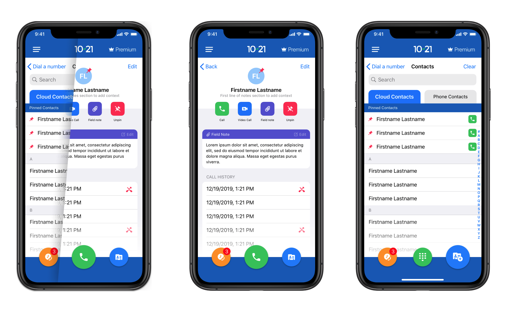

10-21 Police Phone Contacts Evaluation
See how we evaluated our contact-saving system and improved our users' dialing experience.
See how we evaluated our contact-saving system and improved our users' dialing experience.
Problem: Our users have to save work contacts to their personal phone that they will only need temporarily, and become difficult to manage as they accumulate.
Assess user's workflow around how they manage their work contacts and design a solution that elegantly allows them to organize the people they need to call.
09/20-11/20
User Research, Experience Design, Interface Design, Brand Identity
Before we embarked on this project, users would simply access their personal contacts through the app. In order to give them a better experience where they didn't have to sort through all their personal contacts, we had to do some research. We found that users are generally not dialing from their contacts because they do not want to save temporary numbers to their personal phone's contact list. In order to help address this pain point, while also helping them avoid searching for contacts in notepads or post-its, we hypothesized that adding a secure, cloud-based contacts list to the app would speed up their workflow.
Our users need to be able to get in touch with civilians without life getting in the way. My goal for this project was to eliminate any mental distractions that could slow down or stop an officer from making an important call.
This rough sketch of potential subscribers attempted to outline potential user journeys for the typical officer. Initial feature ideas of note included the following:
Separate, cloud-based contact list that allows the user to pin the most important contacts to the top. Allowing the user to have a separate space to save work contacts frees up their personal contacts, prevents them from accidentally calling from their real phone number, and saves them the hassle of searching around in a notebook for a phone number that may not even be legible.
Officers are always on the go, and there are plenty of tasks competing for their attention. We hypothesized that adding the ability to take and save notes directly in the contact information card would provide two benefits: first, it would allow the user to provide context to their calls with the contact. Second, it would give them the opportunity to document their actions for their supervisors.
I planned and wrote two surveys that will be emailed out to users based on their recent premium subscription status, and typical usage. These will be sent out separately, and will try to narrow down the typical user journey around dialing a community member as well as the rate of satisfaction with their premium subscription.
v1 will ship a simple, user friendly contacts section that gives users the ability to organize their work calls with greater ease, visibility, and accountability. v2 will assess the user feed back and evaluate the success of the feature.
